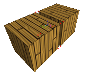
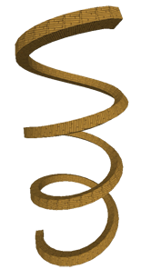

An extension of the Scale to Zero plugin by ShadowMarble, this plugin simplifies making complex curves by combining pairs of vertices. It will find the closest pairs of vertices and merge them together, with options for weighting the various axes for different output.
Map created in roughly an hour with the use of Scale Two Zero.
Use these to specify which axes Scale Two Zero will affect. The usual configuration uses X, Y, and Z for complete combination.
Set the lower bound for point grouping. All points within this distance of each other are treated as the same point and will be scaled as one.
Use these to "weight" the various axes if needed. Note that distances along these axes will be multiplied, so setting a large value for one of these will nullify the effects of that axis. Generally these are not needed unless your vertices are too far to easily combine.
Here are a few example pictures of the plugin in action.
An animation of how the plugin combines nearby pairs of vertices.
An example map created in under 5 minutes using Scale Two Zero.
You can download this tool (and others) using these links below:
You can check out the source code for Scale Two Zero here.